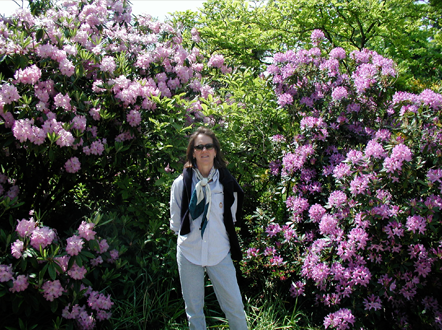

Kellie Carlin Landscape Design

Biography
Although a lifetime passion, the designing of gardens is a second career for me after working in the wine industry for 15 years.
I have been designing gardens in the Napa and Sonoma valleys and San Francisco since 1997. From postage stamp City gardens to family homes in the wine country, to larger country estates; every client has a vision of how their garden should look, feel, smell, sound, and even taste. My experience can help you define that vision and make it a reality. Together we can create a garden that is both beautiful and functional by applying sound sustainable practices that are respectful of our natural resources.
Qualifications
- Certificate in Garden Design
University of California, Berkeley
- Certified member
Association of Professional Landscape Designers
- APLD Member of the Month, January 2010
- Board member
City of St. Helena Tree Committee
- Certified Master Gardener
University of California Extension
- Board member
St. Helena Beautification Foundation
- Qualified Bay-Friendly Landscape Maintenance Professional
- Work experience in the nursery
industry and with
prominent
landscape architects in Napa Valley
- B.S. Nutrition Science
University of California, Davis
- M.S. Food Science/Enology
University of California, Davis
- My Houzz profile